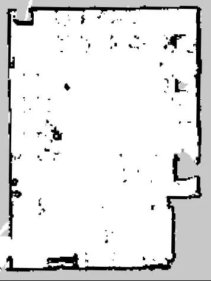
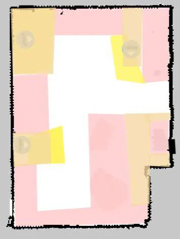
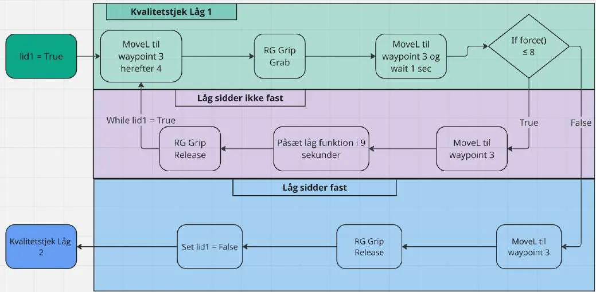
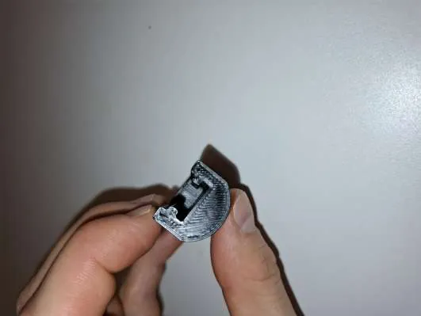
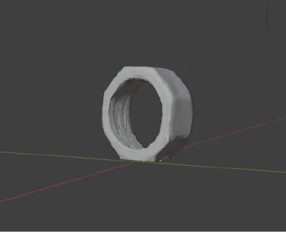
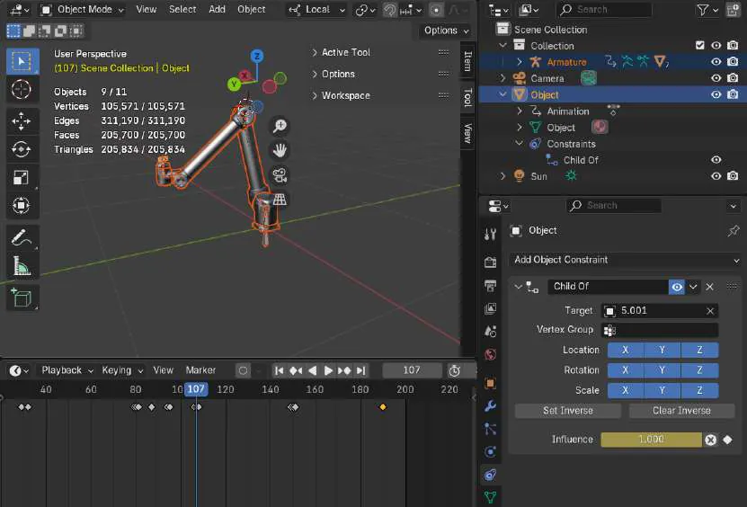

← All workSheet 05 of 08
Course 62112 Industry 4.0 in Practice · DTU · team of 5
AMR, Cobot and Smart-Factory Lab
Hands-on tests with the machines of a modern factory: a mobile robot that carries parts, two cobot arms that assemble and check them, a smart conveyor line and an AR training guide.
- Context
- Course 62112, DTU
- Team
- 5 people
- My role
- MiR missions, force-based QC, vision basics
- Tools
- MiR100, UR10, OnRobot Eyes, Festo MPS 403, HoloLens 2, Blender
- 5 min 35 s
- full cobot + AMR cycle
- 21.2 s
- average conveyor cycle (run 1)
- 6 min 45 s
- AR guide, outside tester
What we did
- Mobile robot (MiR100). Cleaned up the scanned factory map, defined zones, and scripted missions with try/catch loops so the robot recovers from blocked routes, plus automatic docking for charging.
- Cobot cell (two UR10s). The robots mount lids on tubs and check them by force: lift the lid a few centimetres, wait a second, and read the force. A tub that lifts with the lid passes; otherwise the lid is pressed on once more, and rejected if it still fails. The full cycle, including the MiR transport, took 5 min 35 s at deliberately low speeds for safe debugging.
- Machine vision. Colour and shape detection with OnRobot Eyes to pick parts from varying pallet positions.
- Smart conveyor (Festo MPS 403). RFID-tagged boxes, colour sorting, lids. We logged every step's timestamps and processed them in Excel/VBA: 21.2 and 22.3 s average cycle in two runs.
- AR guide (HoloLens 2). A Dynamics 365 Guides workflow with a 3D-scanned part and a robot arm animated in Blender. An outside tester finished it in about 6 min 45 s without help.
- 3D printing. Printed gripper fingers on a Prusa MK4 and compared FDM, SLA and SLS.

My part
What I did in the five-person group
- Built the MiR100 zone definitions and the mission structures with error handling.
- Set up the cobot quality-control step using force measurement.
- Worked through the machine-vision fundamentals: camera placement, what affects detection, and its role in Industry 4.0.











